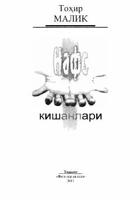

NKInson nafsini jilovlash va ma'naviy poklanish haqidagi falsafiy hikmatlar to'plami.
Ushbu kitob taniqli yozuvchi Tohir Malikning hayotiy kuzatishlari, falsafiy o'ylari va hikmatli so'zlaridan jamlangan to'plamdir. Muallif inson nafsini jilovlash, iymon va axloqiy poklik kabi mavzularni o'ziga xos uslubda, jumladan, yapon she'riyati uslubiga yaqin bo'lgan "uchliklar" orqali tahlil qiladi.